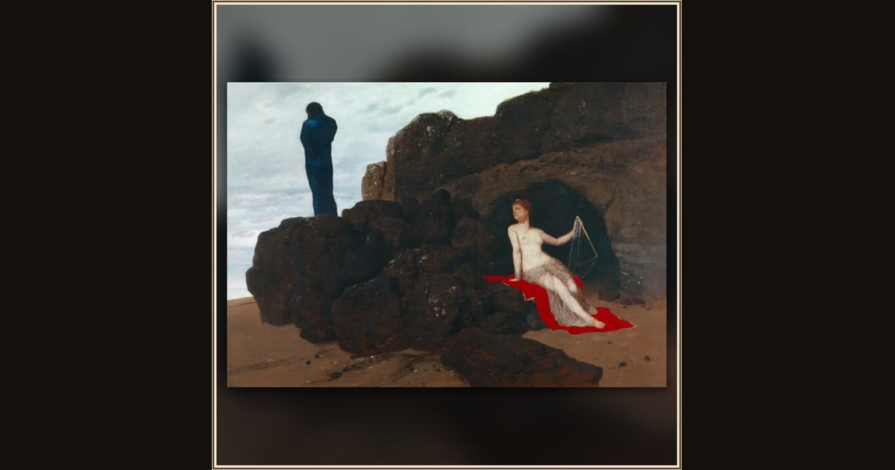

Odysseus and Calypso
Arnold Böcklin · 1882 · Kunstmuseum Basel · Basel, Switzerland
On a lonely rock, homesick Odysseus stares out to sea in cool blue, turning away from the nymph Calypso who wants him to stay forever. Explore its place in Book V of the Odyssey.